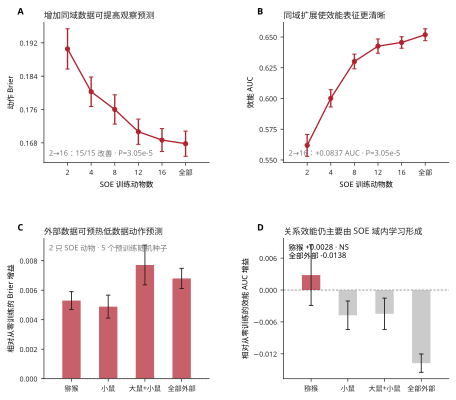
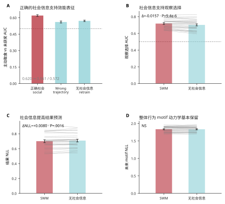
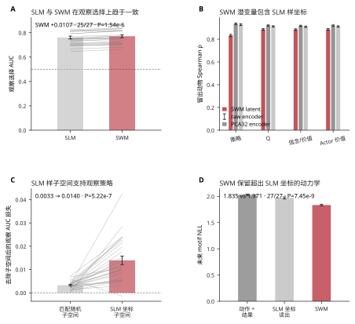
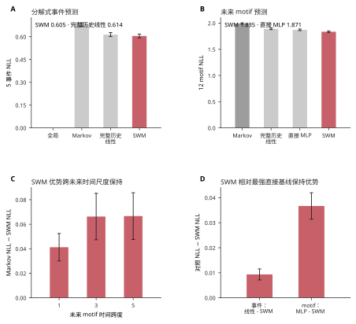
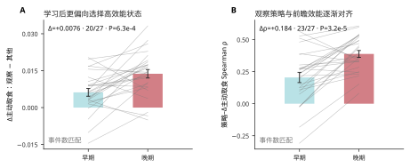
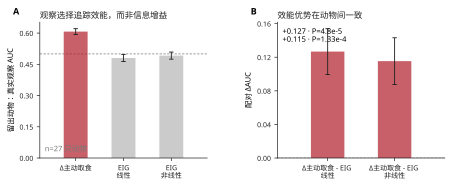
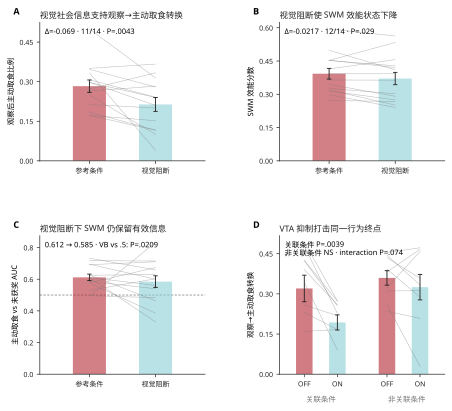
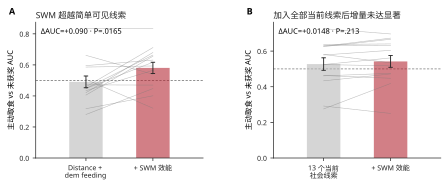
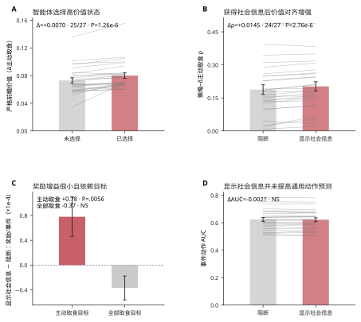
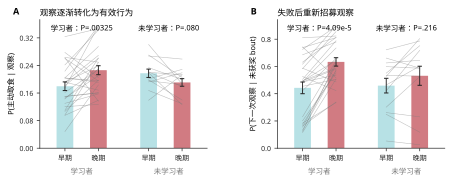

同一真实当前状态
社会世界模型 / 目标导向社会信息采样 / 虚拟小鼠
目标导向社会信息采样的社会世界模型（SWM）
一个数据驱动的预测模型，将真实社会状态、采样选择、未来结果和行为动力学连接起来。下方虚拟小鼠图谱可精确回放用于检验模型的真实事件。
社会朝向—
社会观察概率—
社会距离—
观察鼠 / 示范鼠头朝向—
主示例：最新版 Module 1.4 虚拟小鼠，并配对 frozen-v85 行为空间的精确坐标。
探索行为 motif
行为空间被组织为 12 个 motif。可使用 社会朝向 1/2/4/7 查看不依赖模型阈值的稳定 motif 结构，再切换到 观察模型概率 查看较保守的逐帧 v5 置信度层。每个可点击片段都会显示 社会朝向, 社会观察概率, 鼻尖到鼻尖的 社会距离, 以及 观察鼠 / 示范鼠头朝向, 同时单独保留更严格的已验证 observation-bout 标签。点击任意片段可播放精确的虚拟小鼠视频；点击空白处放置比较圆，拖动平移，滚轮或双指缩放。
留出动物最佳案例可视化 · ANM4 D139
社会世界模型（SWM）
这个留出动物示例直接比较同一真实当前状态下的记录未来与保存的模型 rollout。下方每一步和每个概率都来自真实 session / 模型输出，并非示意轨迹；总体动物结果在下方给出。
A SWM 学习一个可预测的关系状态
P(观察)
P(结果)
P(下一 motif)
zt潜在社会状态
at + ot→
zt+1预测状态
at+1 + ot+1→
zt+2预测状态
已观察 xt自身状态 · 示范鼠状态 · 近期动作/结果历史
→
编码器 + GRU由真实序列得到的后验状态
→
5 事件视图由策略头与结果头分解得到。12-motif 状态是未来预测目标，而不是编码器输入。
B 同一当前状态，不同社会信息
同一真实记录的当前状态ANM4 D139 · 留出动物
正常
全部已观察社会通道
冻结后验 → 预测未来
社会信息对照
匹配的错误社会轨迹 / 无社会信息重训
训练分布内对照 · 相同留出动物评估
6 / 8SWM top-1 motif 步骤
0 / 8Markov top-1 motif 步骤
0.620 → 0.561 / 0.572效能 AUC · 替换 / 无社会信息重训
27 只留出动物的总体 benchmark
上方主示例是刻意选择的最清晰案例；下方总体动物结果用于证明该优势并非局限于这一事件。
Scaling & prospective Observe value
域内扩展
0.562 → 0.646
SOE 训练动物从 2 增至 16 只时，留出动物社会效能 AUC 提高。15/15 个匹配的 fold × repeat 比较均改善 (P=3.05×10−5).
5 SEED 低数据迁移
5 / 5 seeds
仅用 2 只 SOE 训练动物时，猕猴预训练使 Brier 改善 +0.00530；5/5 个 seed 均值和 5/5 个留出动物 fold 均值均改善（clustered P=.031）。大鼠+小鼠为 +0.00771，全部外部数据为 +0.00680；到 8 只动物时这些增益接近 0。
前瞻观察价值
AUC 0.620
在相同潜在状态 zt, ΔActive = P(Active|Observe) − P(Active|Other) 可预测一次真实观察最终是转为主动取食而不是未获奖（27/27 高于机会水平）。
数据规模区分两类学习到的状态。
外部序列经验可以预热低数据下的观察/动作动力学，但 SOE 的社会效能表征并不能普遍迁移。随着域内动物增加，效能状态逐步变清晰；过于宽泛的外部预训练甚至可能削弱它。


SWM ↔ SLM 计算桥梁

解释： SWM 独立恢复了与决策有关的 SLM 样坐标，这一子空间选择性参与观察策略；与此同时，完整 SWM 还保留了 SLM 坐标本身无法解释的额外预测动力学。
预测 benchmark · 27 只留出动物

学习依赖 · 27 只留出学习者
学习使观察策略逐渐与前瞻社会效能对齐
对于同一个学习到的状态 zt, 将前瞻观察价值定义为 ΔActive = P(Active | zt, Observe) − P(Active | zt, Other). 随着训练进行，动物越来越倾向于在模型预测社会采样能够提高有效主动取食概率的状态下进行观察。
前瞻价值选择
0.006 → 0.014
真实观察与非观察状态的平均 ΔActive 差异。 Late − early = +0.00757; 20/27 increase; P=5.66×10−4.
策略–价值对齐
ρ 0.205 → 0.388
动物内模型 P(观察) 与 ΔActive 的相关。 23/27 increase; Δρ=+0.183; P=3.64×10−5.
观察效能
AUC 0.620
ΔActive 可预测一次真实观察最终是否转为主动取食而非未获奖 (AUC 0.620). 相对“距离 + 示范鼠进食”增加 +0.088 AUC；即使加入全部 13 个当前社会线索后仍增加 +0.021 AUC (P=2.68×10−4).
社会信息依赖
0.620 → 0.561 / 0.572
按训练日和时长匹配的错误社会轨迹使效能 AUC 降至 0.561 (26/27, P=1.49×10−8); 单独从头训练的无社会信息 SWM 为 0.572 (26/27, P=2.29×10−6).


支持的解释
社会观察确实携带大量关于动态世界状态的信息，但动物并不是简单地在信息增益最大的时刻进行观察。随着学习，社会采样越来越发生在模型预测其能够提高未来取食效能的状态。
重要边界
这支持 目标导向的社会信息采样, 而不是一般性的“追求不确定性”规则。ΔActive 是学习到的预测模型内部、同一状态下的反事实量，而不是强制观察所产生的随机化因果效应。
在匹配事件数以及观察/其他动作后，学习者早期→晚期的策略–价值对齐增强仍然存在，因此该效应不是由晚期样本更多造成的。 但 13 只 non-learner 也显示类似增强，Group×Stage 对比并不显著。因此这里把对齐视为随训练/经验增强的计算过程，而不是 learner 特异表型。
严格 v2 agent 只提供有限的主动感知充分性证据: 在 Active 特异目标下，显示社会证据带来的奖励增益仅为 +7.8×10−5 per event (19/27 animals, P=.0056) 同时 24/27 动物的策略–价值对齐增强。该效应在 food-all 目标下消失。因此这支持目标特异的社会信息利用，而不是强泛化的主动感知结论。
生物学闭环 · 视觉输入与 VTA 汇聚到观察→主动取食转换

边界： 视觉阻断在群体水平同时降低行为转换与 SWM 效能，但两者在动物间的变化量并不相关 (ρ=.218, P=.45). 因此数据支持它们汇聚到共同的行为计算，而不支持“SWM 分数在个体层面中介行为损失”。
视觉阻断线索对照 · SWM 是否超出即时可见信息？

解释： 在视觉阻断下，SWM 保留了无法由最直观当前线索简单解释的信息。目前样本 not 证明其在完整 13 线索当前状态模型之上还有统计独立增量，因此不作这一更强结论。
支持性 agent 充分性检验
这个检验比动物分析更窄：如果 agent 只有在选择观察之后才能获得社会证据，学习到的前瞻价值是否足以训练出选择性的社会采样？

支持性描述转移结果
这里只保留用于锚定行为表型的两个转移效应。完整 5×5 转移热图仍保留在源分析中，因为它们增加描述，但没有提供更强机制解释。

点击任意点播放 · 点击/拖动圆圈进行比较 · 在其他位置拖动平移 · 滚轮/双指缩放
已选示例
点击一个点
Motif 字典
每个 motif 都由 frozen v85 行为图谱定义。Social Observation 统计使用逐帧模型推断/概率；更严格的 merged label 单独保留，用于验证代表性视频 bout。